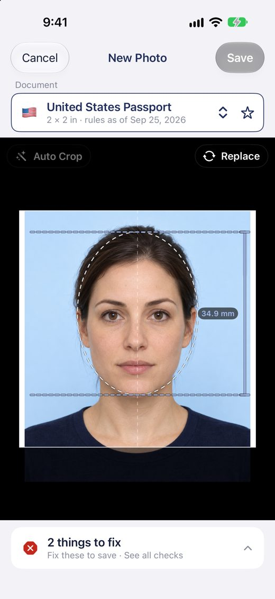
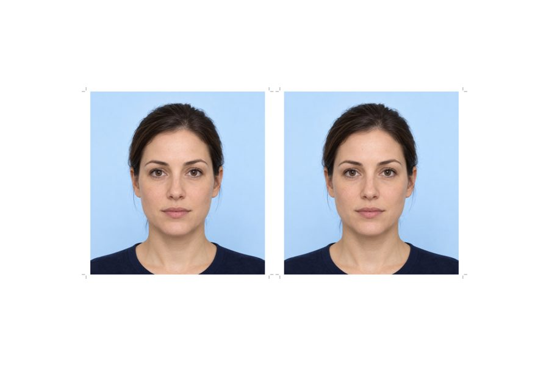

PassPhoto · for iPhone
Passport photos.
Right the first time.
PassPhoto is completely free to use. Every photo feature is included. Optional tips support development and unlock nothing. Take or choose a photo, pick your document, and PassPhoto crops it to that document’s official rules for 45 countries and areas, plus the international ICAO standard. Faces are never retouched. The photo check runs on your iPhone or with Apple’s Private Cloud Compute.
Available on the App Store
Open on the App Store

Pick your document
Choose from 63 documents across 45 countries and areas, each with its official rules and source.
Take or choose a photo
The guided camera tells you when everything lines up.
Check, save and print
Review the photo against the document rules, then save it or make a 4×6 print sheet.